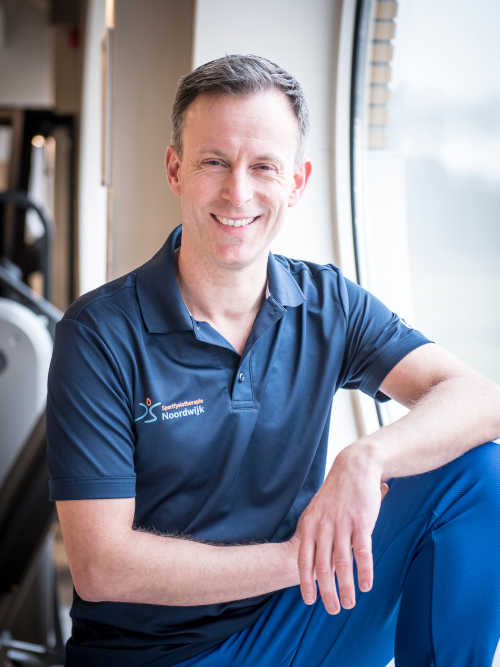

Edward Vink
"Vanaf jonge leeftijd hebben het menselijk lichaam en bewegen een belangrijke rol gespeeld in mijn leven."
Op zestienjarige leeftijd werd ik aangenomen op het CIOS in Overveen en sindsdien ben ik bijna onafgebroken aan het leren geweest. Ik heb bij verschillende praktijken gewerkt en veel ervaring opgedaan in de fysiotherapie en de sportbegeleiding.
In 2007 ben ik gestart als zelfstandig fysiotherapeut en had ik acht jaar een eigen praktijk in Haarlem. In die tijd heb ik me gespecialiseerd tot sportfysiotherapeut; inmiddels ben ik master-opgeleid. Ik heb verschillende (top)sporters naar hun herstel mogen begeleiden en was drie seizoenen hoofdfysiotherapeut van de hoofdklasse-hockeyers van Bloemendaal.
Met Sportfysiotherapie Noordwijk maak ik volop gebruik van mijn specialisme: sporters van ieder niveau op een moderne en wetenschappelijke manier begeleiden.
"As Head Coach I would certainly want to work again with a professional with his qualities."
Russell Garcia, hoofdcoach